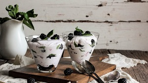

Ice cream (derived from earlier iced cream or cream ice) is a sweetened frozen food typically eaten as a snack or dessert. It is usually made from dairy products, such as milk and cream, and often combined with fruits or other ingredients and flavours. It is typically sweetened with sugar or sugar substitutes. Typically, flavourings and colourings are added in addition to stabilizers. The mixture is stirred to incorporate air spaces and cooled below the freezing point of water to prevent detectable ice crystals from forming. The result is a smooth, semi-solid foam that is solid at very low temperatures. It becomes more malleable as its temperature increases.The meaning of the phrase "ice cream" varies from one country to another. Phrases such as "frozen custard", "frozen yogurt", "sorbet", "gelato" and others are used to distinguish different varieties and styles. In some countries, such as the United States, the phrase "ice cream" applies only to a specific variety, and most governments regulate the commercial use of the various terms according to the relative quantities of the main ingredients, notably the amount of cream. Products that do not meet the criteria to be called ice cream are labelled "frozen dairy dessert" instead. In other countries, such as Italy and Argentina, one word is used for all variants. Analogues made from dairy alternatives, such as goat's or sheep's milk, or milk substitutes (e.g., soy milk or tofu), are available for those who are lactose intolerant, allergic to dairy protein, or vegan.

The meaning of the phrase "ice cream" varies from one country to another. Phrases such as "frozen custard", "frozen yogurt", "sorbet", "gelato" and others are used to distinguish different varieties and styles. In some countries, such as the United States, the phrase "ice cream" applies only to a specific varietyAnalogues made from dairy alternatives, such as goat's or sheep's milk, or milk substitutes (e.g., soy milk or tofu), are available for those who are lactose intolerant, allergic to dairy protein, or vegan.
Most governments regulate the commercial use of the various terms according to the relative quantities of the main ingredients, notably the amount of cream. Products that do not meet the criteria to be called ice cream are labelled "frozen dairy dessert" instead. In other countries, such as Italy and Argentina, one word is used for all variants.
The result is a smooth, semi-solid foam that is solid at very low temperatures. It becomes more malleable as its temperature increases.The meaning of the phrase "ice cream" varies from one country to another. Phrases such as "frozen custard", "frozen yogurt", "sorbet", "gelato" and others are used to distinguish different varieties and styles. In some countries, such as the United States, the phrase "ice cream" applies only to a specific variety, and most governments regulate the commercial use of the various terms.